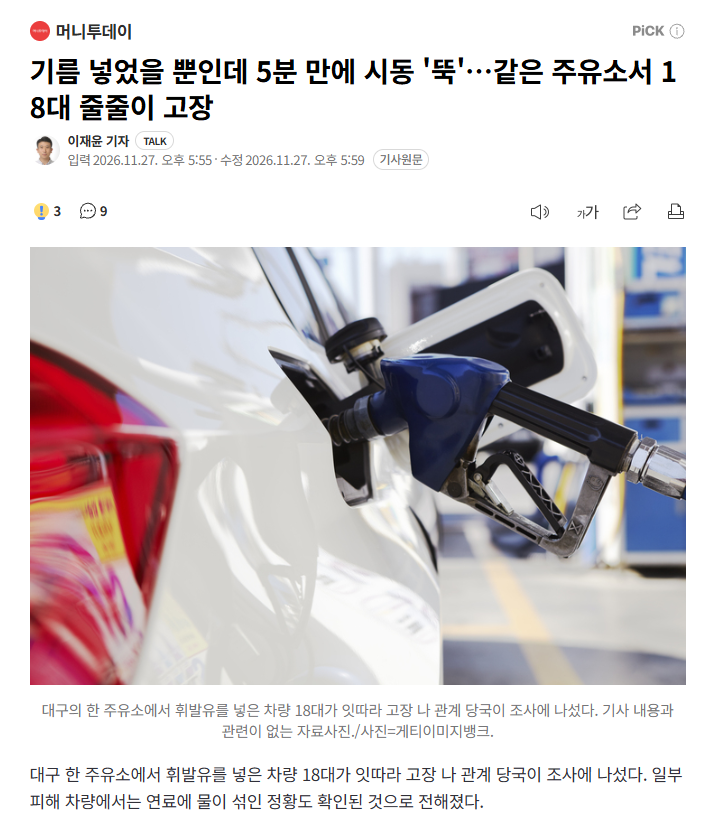

https://n.news.naver.com/article/008/0005447573

이런 경우 엔진을 완전히 내리고 분해 청소 후 조립 해야 됨???
https://n.news.naver.com/article/008/0005447573

이런 경우 엔진을 완전히 내리고 분해 청소 후 조립 해야 됨???
와 ㄹㅇ 큰 정비네
일단 엔진 먼저 까봐야지. 실린더 안나갔는지.
엔진 나갔으면 연료계통이고 나발이고....
잘 말리면 안돼? 근데 연료 물 분리기 있지않나
그것도 어느 한계점이 있지 않을까?
잘말린다 수준이아님 가솔린엔진이랑 디젤엔진의 작동구조가 완전히다르기때문에 싹다들어내서 엔진부품 하나하나 봐야함
게다가 물혼합이면 엔진오일자체랑 섞여서 내부는 완전 씹창날듯
연료랑 엔진오일이랑 안섞이는데
연료에 물 섞였다거 오일이랑 섞이진 않아
실린더내 연소되지 않은 물이 남은경우
압축 행정에서 크랭크가 휠 수 있고
엔진 블럭에도 데미지가 갈 수 있는데
그럼 걍 엔진 바꾸는 수준의 수리를 해야함
뭔개소리세요 분사하고 피스톤내부에 물이남은거고 압축행정에 위아래로 움직일때 물이 밑에있는 오일탱크쪽으로 흘러가서 열에의해 혼합되는데 피스톤 기밀유지하는 o링도 결국엔 훼손당함
기름에 독탔네
물이 섞인거면 기름탱크 깨져서 지하수 들어간듯?
몇대도 아니고 저 숫자면 물들어간거 맞을듯
뉴스 댓글보면 기름에 물타서 장사한다 뭐라하던데 진짜 저지능자면 모를까 일부러 물탄건 진짜 개소리인듯
혹시 모른다 예전에도 저런일 너무 많았어서
물이 들어갔다는 건 연료 펌푸가 엔진으로 물을 밀었다는 뜻이고
그렇다는 건 그 오염된 연료가 연료계통상에 다 남아있다는 거니까
연료가 엔진까지 들어가는 라인을 다 청소해야함.
엔진 축이나 그런거 안뿌개졌으면 뜯어서 살리면 살릴수도있을껄
안뿌개졌어도 비파괴검사해야할거같은데
데미지 왕창 갔을텐더
가솔린엔진은 연료상태 이상하면 얌전히 시동꺼져서 물들어간 정도면 연료라인 세척만 해주면 멀쩡할거임
디젤이 연료 꼬롬해도 일단은 돌아는 가니까 일이 커지는거지
디젤이 강인하다해봐야 가솔린의 겨우 11 12배... 정비사를 불러라
가솔린:뭐꼬 행님 임마 이거 불이안붙는다 안카요 나 그만해볼께
디젤: 압축시켜있! 일단 엔진굴러가니 조아쓰!
에겐과 테토인가
보링 가즈아아
ㄹㅇ 이거 탱크 터져서 물 들어간듯
주유소가 다 물어내야겠네?
주유소가 든 보험사가 좆됐쥬
주유소가 고의로 저지른거면 보험처리 안되잖아. 자기들도 모르게 섞인거면 보험되겠지만
이제 그걸 증명하는게 쟁점이 되겠지
대구 달서구 주유소인데 대구안에서도 많이 저렴한 곳이네
나는 너무 저렴한 곳은 피함
연료에 물 혼입이라... 콘로드나 크랭크축 데미지 먹은거면 수리비가 클거고 그게 아니면 걍 연료탱크 연료라인 세척 쯤으로 끝나지 않으려나
안 고치면 수리비 0원
18대나 해먹었으면 보상해준다고 주유소 접어야겠네
ㅋㅋ
보험안되면?
보험되면 뭐 보험사가 알아서 해야지
나도 주유하고나서 연료필터등에 불 들어와서 보니까 연료에 물 섞인거였음
내 친구 항상 저기서 넣는데 마지막으로 주유한 게 22일이라 괜찮다고 함
엔진관련 부속 새걸로 다 갈아야되던데 ㅋㅋ
저건 휘발유랑 경유 헷갈린게 아니라 휘발유차에 휘발유를 넣은건데 그 휘빌유 자체가 문제라는거구만
연료 혼입이면 엔진뿐만 아니라 연료계통 전부 들어내야될껄